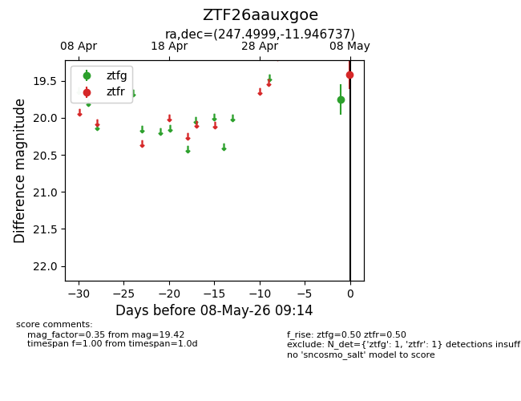
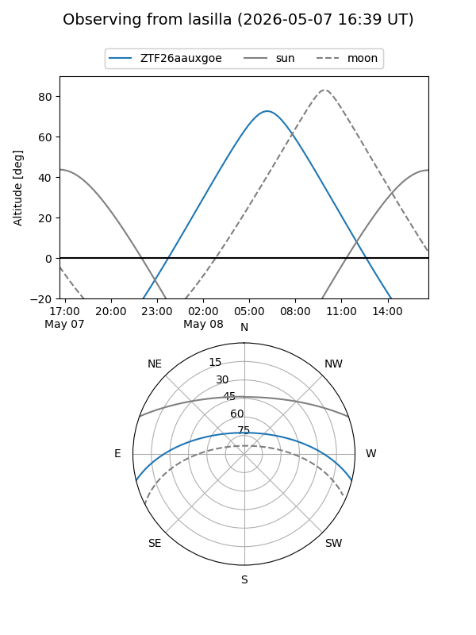
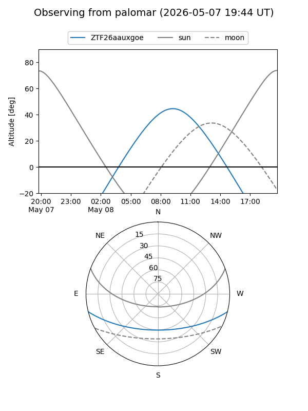

ZTF26aauxgoe
Target ZTF26aauxgoe at 2026-05-08 09:15
Aliases and brokers:
FINK: link
Lasair: link
ALeRCE: link
alt names
ZTF26aauxgoe (ztf,fink_ztf)
Coordinates:
equatorial (ra, dec) = 247.4999,-11.94674
equatorial (HMS+DMS) = 16:29:59.99,-11:56:48.25
galactic (l, b) = (3.9250,+24.17315)
Flags:
Photometry:
last ztfg=19.75, ztfr=19.42
1 ztfg, 1 ztfr detections
Lightcurve

Visibility


Additional plots